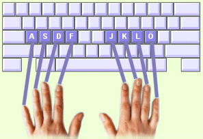

In der Grundstellung liegen deine Finger in der mittleren Reihe (auch "Grundreihe" genannt). Von der Grundreihe aus erreichen deine Finger alle anderen Tasten.
Tipp! Spürst du die kleinen Erhebungen auf den Tasten F und J? Sie helfen dir dabei, die richtige Ausgangsposition der Finger wieder zu finden, ohne auf deine Hände schauen zu müssen. |
 |